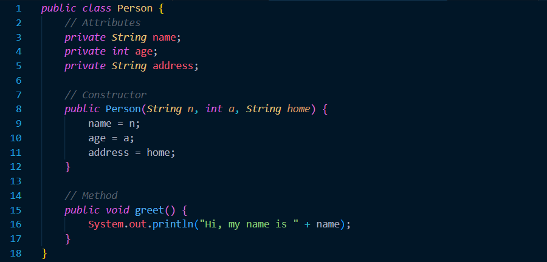
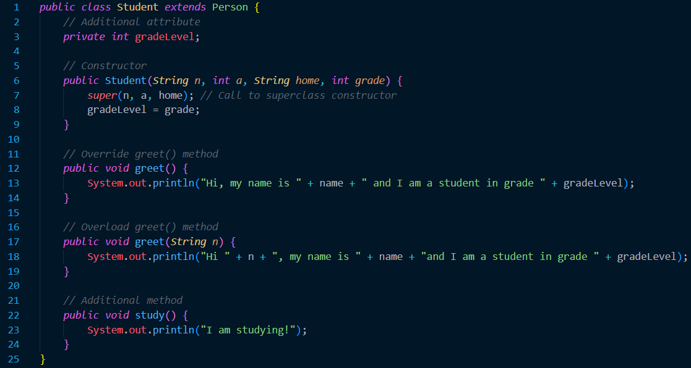

Object Oriented Programming
Prerequisite Knowledge and Terms
Before proceeding with this tutorial, make sure you are familiar with the following concepts:- A basic understanding of the Java programming language some of features
- A basic understanding of variables, primitive data types and methods.
Introduction
Object oriented programming, or otherwise known as OOP, is a programming style that involves the creation of objects. In order to create objects, we use a sort of 'template' called a class. An object is an instance of a class. Every instance of a class is assigned to a variable called the identifier. You will use that identifier to access the object's attributes and behaviors. Attributes and behaviors refer to the instance variables and methods respectively. Every single object has their own attributes and behaviors as per the class that is has instantiated.OOP presents a multitude of benefits. It allows programmers to reuse a piece of code that they have previously written; It provides a simple way to create objects; It provides easy access to object attributes and behaviors... All in all, all these concepts of OOP provide benefis for large scale systems that involve a myriad of objects. OOP makes it easy to intermingle different pieces of code to produce a grander system.
Classes
All object oriented programs use classes as a way to instantiate objects. As explained previously, a class is a template for an object; objects are instances of classes. Each object has attributes and behaviors that were written in its class. However, each object is personalized in way. This means that it can have a differet name, age, adress, etc... The way we determine this personalizations is using a constructor. A constructor is a standard part of class. It is a sort of method with the same name as the class. When an object is created, the constructor is automatically executed. Should the developer decide not to create a constructor, Java creates a default constructor at run time for the class. Doing so, is not recommended and is considered bad practice. Your object oriented programs should have their own contrusctors. Take a look at the class below as an example:
The example above creates a Person class. The Person constructor has three paramaters: name, age and adress. Also, the Person class has a public method greet(). This means that any time a Person object is created, three parameters need to be inputed. Moreover, that Person object will have access to the greet() method. Take a look at the example below on how the person object is created:
Another important topic in relation to OOP, is encapsulation. Encapsulation is the process of hidding class details to the outside world. This means that the implementation of a class can be changed without affecting the code that uses it. Encapsulation is achieved using access modifiers. Three most important that you will need to know is the following: public, private and protected. A public variable means that it can be accessed from any other class. A private variable means that it can only be accessed within the class. A protected variable means that it can be accessed within the same package and subclasses.
Inheritance
Inheritance is a concept in OOP that allows a class to inherit the charactersitics of another class. The class that is being inherited from is called the superclass or parent class, and the class that is inheriting the characteristics is called the subclass or child class.Inheritance is useful because it promotes code reuse and allows for hierarchical organization of classes. A subclass can add or override a behavior of the superclass, while still retaining its original functionality. Overriding a method means to create a method with the same name and paramter list as another method, except make it perform a different task. Overloading a method is creating a method with the same name as another method but a different parameter list. Both of these concepts a very important in OOP. Take the class below as an example of inheritance, overloading and overriding.
 Something important to note is the keyword super() in the class above. Super is a call to the constructor of the superclass inside the subclass.
Polymorphism
Polymorphism is a fundamental concept in object-oriented programming that allows objects of different classes to be treated as if they are objects of a common superclass. In other words, it is the ability of objects to take on multiple forms. There are two types of polymorphism in Java: compile-time polymorphism (also known as method overloading) and runtime polymorphism (also known as method overriding).Abstract Classes and Interfaces
Abstract classes and interfaces are both concepts in object-oriented programming that allow for more flexible and modular code. An abstract class is a class that cannot be instantiated, meaning you cannot create an object of that class directly. Instead, it is designed to be extended by other classes that inherit its properties and methods. Abstract classes contain abstract methods, which are methods that are declared but not defined, meaning they have no implementation in the abstract class. These abstract methods are meant to be implemented by the subclasses that extend the abstract class.Interfaces, on the other hand, are similar to abstract classes in that they cannot be instantiated, but they only contain abstract methods and constants. Unlike abstract classes, interfaces cannot have instance variables or constructors. Interfaces are designed to be implemented by classes that want to provide specific functionality. When a class implements an interface, it is required to implement all of the methods defined in the interface.
Additional Takeaways
- Remember to always call super in the subclass constructor.
- When using polymorphism, make sure to properly understand how your program works and how to properly override superclass methods.
- Do not overuse inheritance in your programs. It can lead to unnecessary complications.
- Make sure to properly understand the class hierarchy of your program.